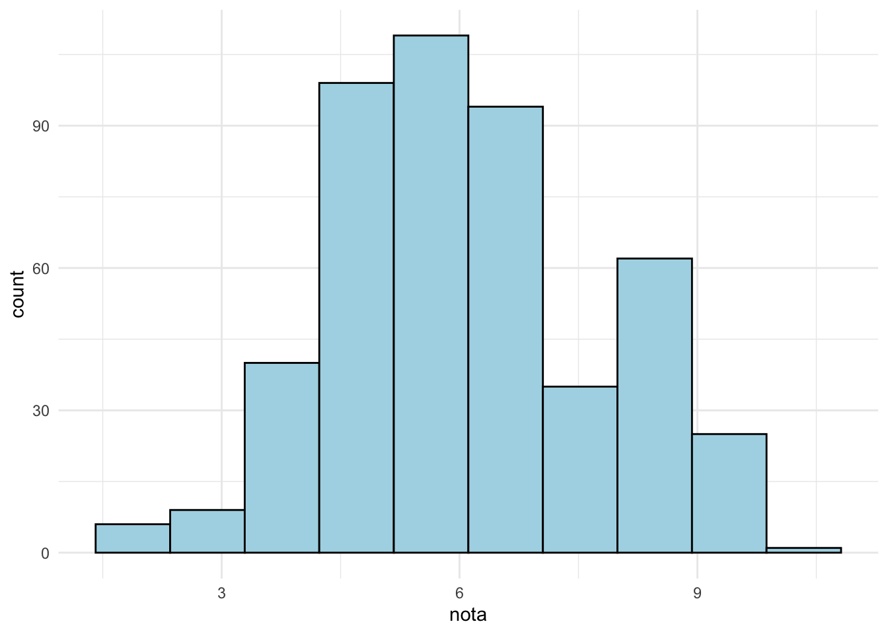
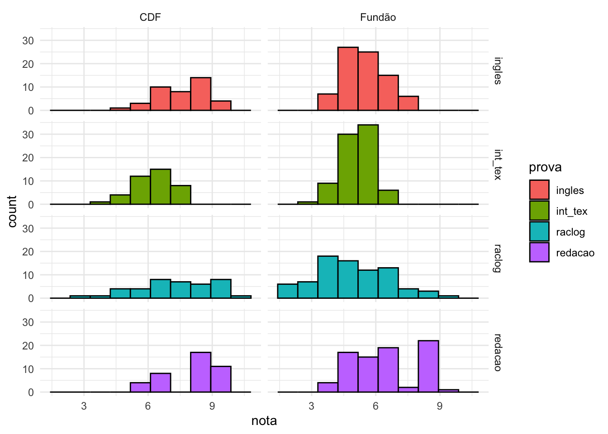

Lista prática 2
Estatística aplicada à psicobiologia I
Código
dados_brutos <- haven::read_sav("alunos.sav") Código
dados <- dados_brutos |>
janitor::clean_names() |>
tibble::rowid_to_column() |>
dplyr::mutate(
grupo_cat =
dplyr::case_when(grupo == 1 ~ "CDF",
grupo == 2 ~ "Fundão")
)Código
dplyr::glimpse(dados)Rows: 120
Columns: 8
$ rowid <int> 1, 2, 3, 4, 5, 6, 7, 8, 9, 10, 11, 12, 13, 14, 15, 16, 17, 1…
$ raclog <dbl> 7.692308, 9.615385, 9.615385, 9.615385, 9.230769, 5.769231, …
$ int_tex <dbl> 7.00, 7.25, 6.25, 7.00, 7.25, 5.25, 7.50, 5.00, 5.75, 5.50, …
$ ingles <dbl> 8.666667, 9.000000, 8.666667, 7.333333, 7.000000, 7.000000, …
$ redacao <dbl> 8.0, 8.0, 8.5, 9.0, 8.5, 8.0, 7.0, 9.0, 8.0, 9.0, 9.0, 7.0, …
$ grupo <dbl+lbl> 1, 1, 1, 1, 1, 1, 1, 1, 1, 1, 1, 1, 1, 1, 1, 1, 1, 1, 1,…
$ socio <dbl+lbl> 1, 1, 1, 1, 1, 2, 2, 2, 2, 2, 3, 3, 3, 3, 3, 4, 4, 4, 4,…
$ grupo_cat <chr> "CDF", "CDF", "CDF", "CDF", "CDF", "CDF", "CDF", "CDF", "CDF…Observe o banco de dados “Alunos.sav” a seguir. Neles estão descritos os dados referentes a avaliação de 120 alunos de uma escola e suas respectivas notas em uma série de 4 provas, além de uma classificação socioeconômica e seu “status” dentro da sala: ser da turma dos CDF ou da turma do Fundão.
Dados: Nível de significância adotado – 5%.
Questão a)
Obtenha os valores de média e desvio padrão de cada uma das provas.
Código
dados_provas_longo <- dados |>
tidyr::pivot_longer(
cols = c(raclog, int_tex, ingles, redacao),
names_to = "prova",
values_to = "nota"
)Questão b)
Obtenha os dados descritivos das provas em função do status dos alunos (CDF ou Fundão)
- Considerando os dois grupos de status:
Código
| grupo_cat | nota_media | nota_mediana | nota_desvio_padrao |
|---|---|---|---|
| CDF | 7.250521 | 7.320513 | 1.370790 |
| Fundão | 5.507532 | 5.384615 | 1.418024 |
- Considerando o status e a prova:
Código
| grupo_cat | prova | nota_media | nota_mediana | nota_desvio_padrao |
|---|---|---|---|---|
| CDF | ingles | 7.608333 | 7.666667 | 1.0208301 |
| CDF | int_tex | 6.218750 | 6.250000 | 0.9254027 |
| CDF | raclog | 7.250000 | 7.500000 | 1.7690807 |
| CDF | redacao | 7.925000 | 8.000000 | 0.9710555 |
| Fundão | ingles | 5.416667 | 5.333333 | 1.0823998 |
| Fundão | int_tex | 5.106250 | 5.125000 | 0.8032519 |
| Fundão | raclog | 4.913462 | 5.000000 | 1.6714379 |
| Fundão | redacao | 6.593750 | 7.000000 | 1.3361899 |
- Visualizando os dados:
Código
dados_provas_longo |>
ggplot() +
aes(x = prova, y = nota, fill = grupo_cat) +
geom_boxplot() +
facet_wrap(~grupo_cat) +
theme_minimal()
Questão c)
As notas das provas possuem distribuição normal?
- Visualizando as distribuições:
Código
dados_provas_longo |>
ggplot() +
aes(x = nota, fill = prova) +
geom_density() +
facet_wrap(~prova) +
theme_minimal()
Pelo gráfico, as notas da prova int_tex parecem ter distribuição próxima da normal.
Código
| prova | statistic | p.value | method | normalidade |
|---|---|---|---|---|
| ingles | 0.9667337 | 0.0045707 | Shapiro-Wilk normality test | FALSE |
| int_tex | 0.9854305 | 0.2245203 | Shapiro-Wilk normality test | TRUE |
| raclog | 0.9770196 | 0.0377027 | Shapiro-Wilk normality test | FALSE |
| redacao | 0.9303877 | 0.0000102 | Shapiro-Wilk normality test | FALSE |
O resultado teste Shapiro-wilk de normalidade concorda com a minha interpretação do gráfico de densidade: apenas a prova int_tex tem distribuição próxima da normal!
Questão d)
Existe diferença nas notas dos alunos em função da classificação socioeconômica?
Questão e)
Existe diferença nas notas dos alunos em função do status dos alunos (CDF ou Fundão)?
Questão f)
Existe associação significante entre a classificação socioeconômica e o status dos alunos na sala?
Nesse caso, faremos um Chi-Quadrado.
Primeiro criamos a tabela de contingência e verificamos se todas as caselas tem pelo menos 4 alunos.
Rows: 2
Columns: 5
$ grupo_cat <chr> "CDF", "Fundão"
$ `1` <dbl> 10, 21
$ `2` <dbl> 10, 21
$ `3` <dbl> 10, 22
$ `4` <dbl> 10, 16Código
dados_chi_quadrado |>
knitr::kable()| grupo_cat | 1 | 2 | 3 | 4 |
|---|---|---|---|---|
| CDF | 10 | 10 | 10 | 10 |
| Fundão | 21 | 21 | 22 | 16 |
Código
chi_quadrado <- dados |>
dplyr::select(grupo, socio) |>
chisq.test()
chi_quadrado |> broom::tidy()# A tibble: 1 × 4
statistic p.value parameter method
<dbl> <dbl> <int> <chr>
1 37.2 1.00 119 Pearson's Chi-squared testNão há evidências de que existe associação significativa entre a cllassificação socioeconômica e o status dos alunos na sala.